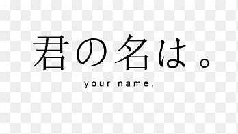
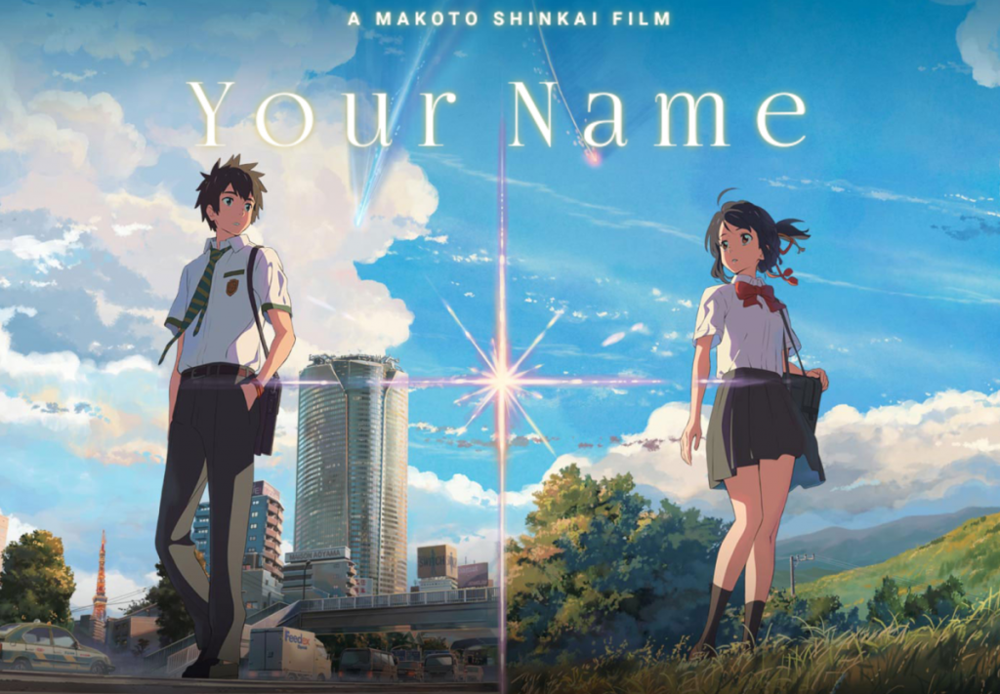
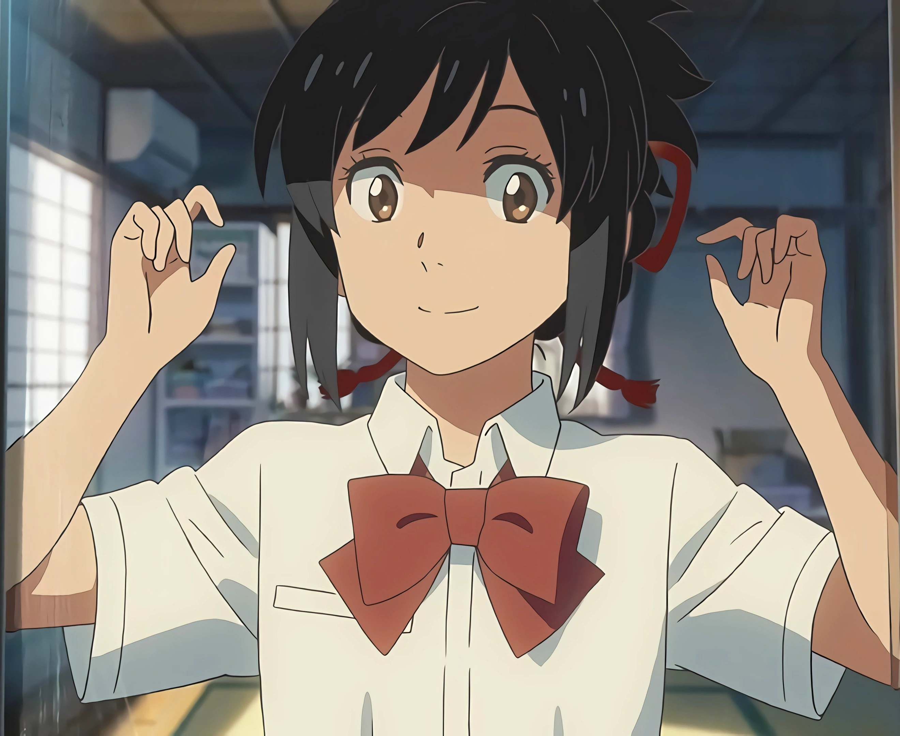
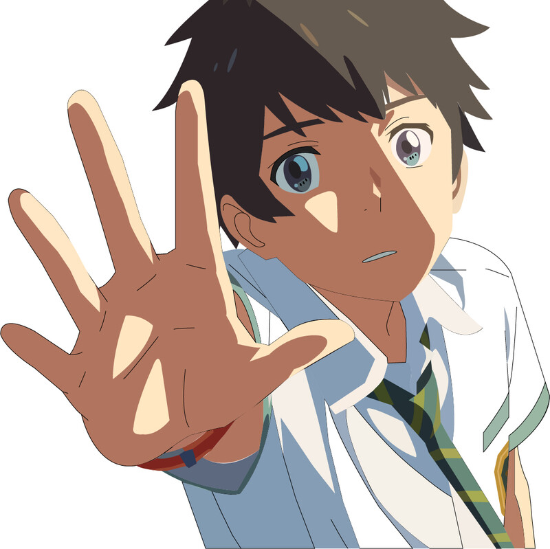
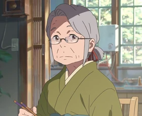
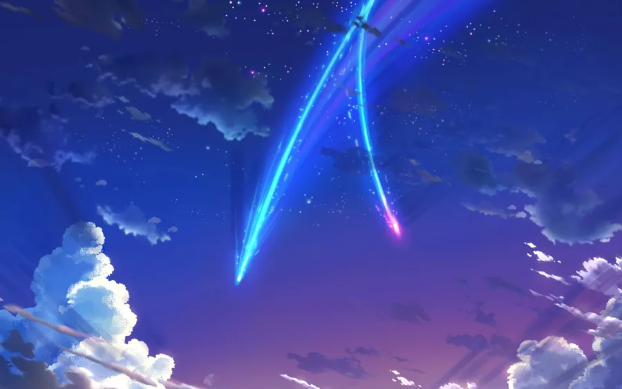

<!DOCTYPE html>
<html lang="en">
<head>
    <meta charset="UTF-8">
    <meta name="viewport" content="width=device-width, initial-scale=1.0">
    <title>Pagina de Anime</title>
    <link rel="stylesheet" href="../css/estilo.css">
</head>
<body>
</html>
    <div class="padre">
        <header>
            <table>
                <tr>
                    <td><div class="logo"> </div></td>
                    <td><div class="titulo">Your Name</div></td>
                </tr>
            </table>
        </header>
        <nav>
            <table>
                <tr>
                    <td><div class="caja"><a href="../index.html">Inicio</a></div></td>
                    <td><div class="caja"><a href="../pag/Demon_Slayer.html">Demon Slayer</a></div></td>
                    <td><div class="caja"><a href="../pag/Frieren.html">Frieren</a></div></td>
                    <td><div class="caja"><a href="../pag/Solo_Leveling.html">Solo Leveling</a></div></td>
                    <td><div class="caja"><a href="../pag/Tobe_HeroX.html">Tobe Hero X</a></div></td>
                    <td><div class="caja"><a href="#">Your Name</a></div></td>
                    <td><div class="caja"><a href="../pag/Contacto.html">Contacto</a></div></td>
                </tr>
            </table>
        </nav>
        <section>
            <h1 class="sub">Your Name</h1>
            <p class="texto">Your Name (Kimi no Na wa) es una película maestra, y a diferencia de los animes de acción o sistemas de RPG que vimos antes, esta es una historia donde la ciencia ficción, la tradición y el romance se mezclan de una manera visualmente deslumbrante.</p>
            <p class="texto">Como la trama involucra un cruce de líneas temporales, armar un buen diagrama de flujo o una línea de tiempo gráfica en tu trabajo será la clave para que la explicación quede impecable.</p>
            
            <h2 class="tex">Trama</h2>
            <p class="texto">La historia sigue a dos adolescentes que no se conocen y viven vidas completamente distintas. Mitsuha es una chica de campo frustrada con su vida tradicional en el pequeño pueblo de Itomori, mientras que Taki es un chico de ciudad que estudia y trabaja en el acelerado Tokio.</p>
            <p class="texto">Un día, por un fenómeno inexplicable, comienzan a intercambiar cuerpos al azar mientras duermen. Para no arruinar sus vidas, empiezan a dejarse reglas y mensajes en sus teléfonos celulares. Lo que empieza como una situación cómica evoluciona en una conexión profunda.</p>
            <h2 class="tex">Giro de la Trama</h2>
            <p class="texto">Cuando los intercambios se detienen abruptamente, Taki decide ir a buscar a Mitsuha. Es entonces cuando descubre una verdad devastadora: Mitsuha y él no solo están separados por la distancia, sino también por el tiempo. Taki está viviendo en el año 2016, pero Mitsuha estaba en el 2013, año en el que el fragmento de un cometa llamado Tiamat impactó sobre Itomori, destruyendo el pueblo y matando a sus habitantes. La segunda mitad de la película trata sobre cómo Taki intenta usar el vínculo espiritual para retroceder en el tiempo y advertir a Mitsuha para evacuar el pueblo antes del desastre astronómico.</p>
            <h2 class="tex">Personajes Principales</h2>
            <h3 class="tex">Mitsuha Miyamizu</h3>
            
            <p class="texto">Una joven sacerdotisa del santuario de su familia. Siente un gran peso por las tradiciones (como el tejido de cuerdas Kumihimo y la preparación del sake ritual) y por la tensa relación con su padre. Su deseo de "ser un chico guapo de Tokio en su próxima vida" es lo que desencadena el vínculo.</p>
            <h3 class="tex">Taki Tachibana</h3>
            
            <p class="texto">Un estudiante de secundaria en Tokio apasionado por la arquitectura y el dibujo. Tiene un carácter algo impulsivo pero es muy noble. Gracias a los intercambios, su vida se vuelve más organizada y aprende a conectarse mejor con los demás.</p>
            <h2 class="tex">Personaje Secundario</h2>
            <h3 class="tex">Hitoha Miyamizu</h3>
            
            <p class="texto">La abuela de Mitsuha. Es quien preserva la sabiduría del Musubi (el concepto de que los hilos, el tiempo y las conexiones humanas fluyen, se cruzan y se enredan).</p>
            <h2 class="tex">El problema que tienen que solucionar</h2>
            <h3 class="tex">El Cometa Tiamat (El Desastre Natural)</h3>
            
            <p class="texto">La fragmentación del cometa al entrar en la atmósfera y su órbita es el peligro físico que amenaza la vida de miles de personas. Actúa como una fuerza de la naturaleza inexorable.</p>
            <p class="texto">El cometa sigue una órbita matemática fija (un ciclo de 1,200 años), lo que representa el destino. Sin embargo, la lucha de Taki y Mitsuha por evacuar el pueblo simboliza el esfuerzo humano por cambiar ese destino. El cometa es el obstáculo "divino" que los protagonistas deben superar mediante su conexión emocional.</p>
        
        </section>
        <footer>
            <h5>Diseñado por: Nehemias Corine Abalos - UMSA,2026</h5>
        </footer>
    </div>
</body>
</html>